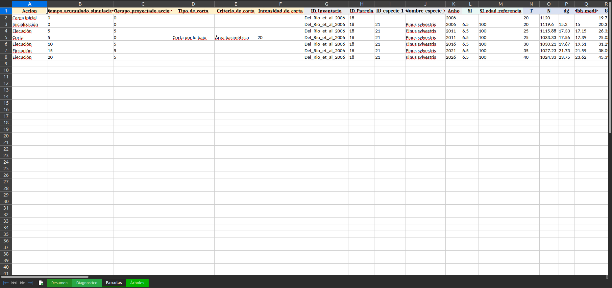
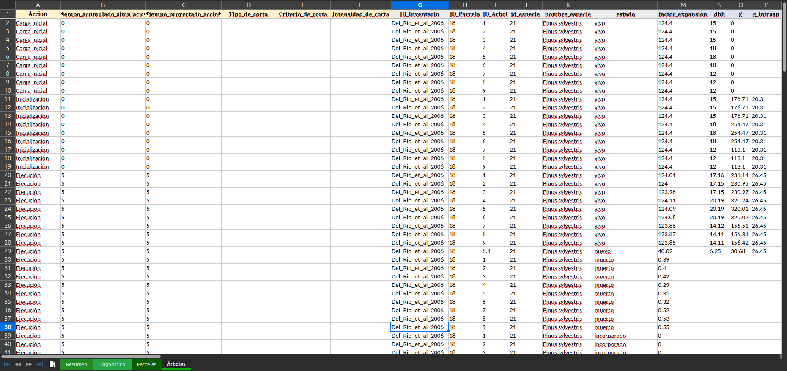

Evolución dasométrica de rodal y árbol
Las hojas de cálculo Parcelas y Árboles concentran los resultados cuantitativos y biométricos de la simulación. Mientras que la hoja Parcelas recoge la cronología longitudinal a escala de rodal para cada paso del itinerario, la hoja Árboles registra el seguimiento detallado pie a pie en los modelos de árbol individual.
Contenido
- Hoja Parcelas: evolución dasométrica a nivel de rodal
- Hoja Árboles: dinámica y seguimiento individual
- Navegación de resultados
Hoja Parcelas: evolución dasométrica a nivel de rodal
La hoja Parcelas recoge la cronología dasométrica completa a escala de rodal o parcela de muestreo, presentando cada fase del itinerario en una fila diferenciada:

Columnas de control y trazabilidad
Las primeras columnas definen el marco temporal y la naturaleza de cada registro:
Accion: Tipo de evento registrado en la fila. Presenta cuatro estados típicos:Carga Inicial: Valores brutos importados directamente del inventario de partida.Inicialización: Valores ajustados tras la asignación de variables derivadas por parte del modelo (alturas estimadas por curvas h/d, volúmenes iniciales y biomasas, entre otros).Ejecución: Resultado tras la aplicación de un periodo de crecimiento (proyección).Corta: Resultado tras la aplicación de una intervención selvícola.
Tiempo_acumulado_simulacion: Suma de años transcurridos desde el inicio de la proyección.Tiempo_proyectado_accion: Años de avance específicos del paso actual (por ejemplo,5en proyecciones y obligatoriamente0en cortas).Tipo_de_corta,Criterio_de_corta,Intensidad_de_corta: Parámetros configurados en la operación selvícola (por ejemplo, Corta por lo bajo, Área basimétrica y 20%).ID_Inventario,ID_Parcela,ID_especie: Identificador único de cada inventario, parcela y especie.AnhoyT: Año cronológico de calendario y edad fisiológica de la masa estimada para ese paso.
Variables dasométricas de masa
A continuación, la tabla despliega las magnitudes biométricas clásicas calculadas a partir del arbolado en pie:
- Densidad (N): Número de pies por hectárea (
N), pies muertos naturales (N_muerto), pies apeados (N_corta) y regeneración incorporada (N_incorporado). - Área basimétrica (G): Superficie de las secciones normales a 1,30 m de altura expresada en m²/ha (
G), junto con sus fracciones de extracción (G_corta) y mortalidad (G_muerta). - Diámetros representativos: Diámetro medio aritmético (
dbh_medio), diámetro medio cuadrático (dg), diámetro dominante (Do, promedio de los 100 pies más gruesos por hectárea) y valores extremos (dbh_minimo,dbh_maximo). - Alturas: Altura media de rodal (
h_media) y altura dominante de Assmann (Ho, media de los 100 árboles más altos por hectárea).
Para consultar la formulación matemática de cada variable, revisa las fichas de la Base de datos de variables: dimensiones y productividad.
Cuantificación de volumen y despiece comercial
El volumen maderable se computa a nivel de parcela integrando las cubicaciones individuales de los árboles:
- Volúmenes globales: Volumen con corteza (
V_con_corteza), volumen sin corteza (V_sin_corteza) y volumen propio de la corteza (V_de_corteza), todos en m³/ha. - Despiece comercial por trozas: Si el modelo incorpora tarifas de clasificación industrial, desglosa el volumen total según destino de mercado:
V_desenrolloyV_chapa: Trozas de máxima calidad y gran diámetro.V_sierra_gruesa,V_sierrayV_sierra_canter: Madera aserrable de diversas secciones.V_postesyV_estacas: Productos de dimensiones intermedias para usos agrícolas o cerramientos.V_trituracion: Madera delgada para pasta de celulosa o tableros de partículas.
No todos los modelos permiten hacer esta clasificación de la madera en productos finales, dado que no todas las especies cuentan con ecuaciones de perfil que permitan este nivel de resolución. En caso de no poder ser calculado, las columnas se omiten en el archivo de resultados. Puedes consultar el catálogo completo de productos en variables: productos de madera y qué modelos permiten su cálculo en la sección de modelos.
Fracciones de biomasa y balance de carbono
SIMANFOR cuantifica la biomasa seca mediante las ecuaciones alométricas del modelo seleccionado (en toneladas de materia seca por hectárea, t/ha):
- Fracciones aéreas: Madera de tronco (
WS), ramas gruesas con diámetro superior a 7 cm (WSW), ramas delgadas entre 2 y 7 cm (WB2_7), ramas muy finas con hojas o acículas (WTBL) y biomasa aérea total (WA). - Fracción subterránea: Biomasa de raíces principales y secundarias (
WR). - Biomasa total (
WT): Suma integral de la fracción aérea y radical (WT = WA + WR). - Stock de carbono: Contenido de carbono elemental fijado en cada compartimento (
Carbono_tronco,Carbono_ramas,Carbono_aereo,Carbono_raicesyCarbono_total), obtenido aplicando el factor de conversión específico de la especie a la biomasa seca.
Más información técnica en variables: biomasa y variables: carbono así como los modelos que permiten su cálculo en la sección de modelos.
Estructura, competencia y biodiversidad
En las columnas finales de la hoja se sintetizan índices dasométricos avanzados:
- Índices de competencia y densidad relativa: Índice de densidad de rodal de Reineke (
SDI), ratio de densidad respecto al máximo biológico (r_(SDI)), espaciamiento de Hart-Becking en marco real y al tresbolillo (Indice_Hart,Indice_Hart_tresbolillo), y coeficiente de esbeltez de rodal (Esbeltez= (Hm / dg) × 100). - Diversidad estructural y específica: Coeficiente de variación del diámetro (
CV_dbh) y de la altura (CV_altura), índice de Shannon para diámetros y alturas, y los índices clásicos de biodiversidad específica (Shannon-Weaver, Simpson, Margalef y Pielou).
Productos no maderables y variables adicionales
Determinados modelos permiten calcular productos no maderables a nivel de rodal (como piñón en Pinus pinea o producción micológica; ver variables: recursos no maderables). Asimismo, en función de los datos de inventario o del modelo seleccionado, pueden incorporarse columnas con información de clima, métricas LiDAR o variables de estación. Cuando el modelo no implementa estos cálculos, las columnas se omiten.
Hoja Árboles: dinámica y seguimiento individual
En los modelos de árbol individual la hoja Árboles registra la evolución pie a pie de todos los árboles de la parcela a lo largo de cada paso temporal:

Identificación y estado vital del arbolado
Cada fila corresponde a un árbol en un instante concreto de la simulación:
ID_Arbol: Identificador numérico único asignado a cada árbol en el inventario inicial, permitiendo su seguimiento a lo largo de toda la proyección.id_especieynombre_especie: Código taxonómico según el IFN (21) y nombre científico (Pinus sylvestris).estado: Situación vital o de manejo del pie en ese paso de simulación:vivo: Árbol en crecimiento activo que continúa en pie en la masa para el siguiente periodo.cortado: Árbol apeado en su totalidad durante una corta o clara (se extrae el 100% de su factor de expansión). Tras este registro, deja de estar presente en proyecciones futuras.parcialmente_cortado: Árbol cuyo factor de expansión ha sido extraído parcialmente durante una intervención selvícola porcentual. La fracción extraída se cuantifica en ese paso y la fracción residual permanece en la masa comovivo.muerto: Árbol que perece por mortalidad natural (autoaclareo o senescencia) durante el paso de proyección.incorporado: Pie procedente de la regeneración natural que alcanza el diámetro normal mínimo de inventariabilidad (ingrowth).nuevo: Árbol que recibe un identificador nuevo al ingresar en la masa simulada mediante regeneración natural.
factor_expansion: Peso estadístico del árbol por hectárea (expan), fundamental para expandir métricas individuales a valores de rodal. Consulta su definición aquí.
Alometría, crecimiento y competencia
- Dimensiones e incrementos: Diámetro normal (
dbh), altura (altura), sección normal (g,g_ha) y sus respectivos incrementos periódicos (dbh_i,g_i,altura_i,v_i,wt_i) calculados por las ecuaciones del modelo (ver variables: dimensiones). - Competencia y copa: Área basimétrica de árboles mayores (
bal), desagregada a nivel intra e interespecífico (bal_intrasp,bal_intersp), y métricas de copa viva (hcb,cr,lcw,hlcw) para evaluar la presión competitiva sobre cada árbol (ver variables: competencia).
Clasificación individual de productos y carbono
De forma idéntica a la hoja de parcelas pero calculada para cada fuste individual, se detallan las variables de volumen (v_con_corteza, v_ha), clasificación comercial de trozas (v_chapa, v_sierra_gruesa, v_sierra, v_trituracion), fracciones de biomasa (ws, wb, wa, wr, wt) y fijación de carbono elemental (carbono_total).
Productos no maderables
Aunque en esta simulación de ejemplo con Pinus sylvestris no aplican, determinados modelos forestales calculan rendimientos de productos no maderables (como la producción de piña y piñón en Pinus pinea o producción micológica en modelos específicos). Cuando el modelo seleccionado implementa estas ecuaciones, las columnas correspondientes se incorporan de manera automática tanto en la hoja de parcelas como en la de árboles; en caso contrario, se omiten para simplificar la lectura del archivo. Puedes consultar las variables disponibles en variables: recursos no maderables y los modelos compatibles en el catálogo de modelos.
Navegación de resultados
- Estructura del libro de resultados y hoja Resumen: Nomenclatura del paquete ZIP, descargas de ejemplo y balance de intervenciones.
- Control de calidad y hoja Diagnóstico: Semáforo de advertencias y tabla de incidencias del motor.